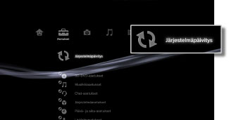

Asetukset > Järjestelmäpäivitys
Järjestelmäpäivitys
Ohjelmistopäivitykset voivat olla esimerkiksi suojauspäivityksiä, uusia tai päivitettyjä asetuksia, toimintoja tai muita asioita, jotka muuttavat nykyisen käyttöjärjestelmän toimintaa. Suosittelemme, että käytät järjestelmässä aina uusinta laiteohjelmistoa.
On kaksi tapaa päivittää
- Päivitä Internetin kautta
- Päivitä tallennuslaitteen kautta
Huomautukset
- Älä sammuta järjestelmää tai irrota tallennusvälinettä päivityksen aikana. Jos päivitys peruutetaan, kun se on käynnissä, laiteohjelmisto voi vahingoittua ja järjestelmä on ehkä huollettava tai vaihdettava uuteen.
- Järjestelmän etuosassa oleva virtapainike ja langattoman ohjaimen PS-näppäin eivät ole käytössä päivityksen aikana.
- Tiettyä sisältöä ei ehkä voi käyttää, ellei laiteohjelmistoa päivitetä.
Päivitä Internetin kautta
Voit ladata päivitystiedot suoraan järjestelmään Internetistä. Uusin päivitys ladataan automaattisesti.
1. |
Valitse  |
|---|---|
2. |
Valitse [Päivitä Internetin kautta]. |
 (Asetukset) >
(Asetukset) >  (Järjestelmäpäivitys).
(Järjestelmäpäivitys).Päivitä tallennuslaitteen kautta
Käytä levylle, Memory Stick™ -muistikortille tai muulle tallennusvälineelle tallennettuja päivitystietoja. Lataa päivitystiedot Web-sivustosta tietokoneen avulla. Lisätietoja on oman alueen SCE-sivustossa.
Vihjeitä
- Päivitystietoja saattaa olla myös joillakin pelilevyillä, kaupasta hankittavissa BD-video-ohjelmistoissa ja muilla levyillä. Kun toistat levyä, jolla on päivitystietoja, näyttöön tulee päivitysohje. Päivitä järjestelmä noudattamalla näyttöön tulevia ohjeita.
- Joidenkin tallennusvälinetyyppien käyttämiseen tarvitaan USB-sovitin, joka ei tule tuotteen mukana.